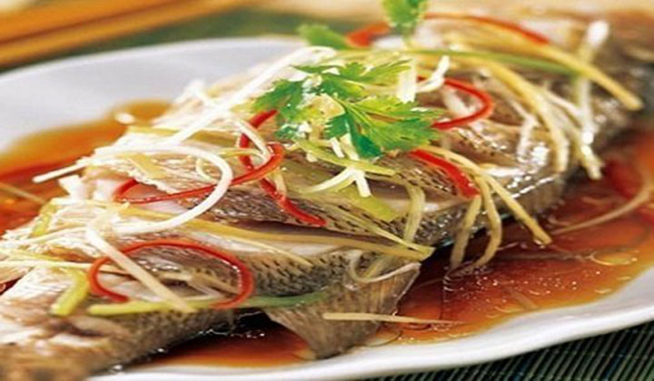

Chi Tiết Sản Phẩm
Cá Chép Om
- Cá chép om dưa - món ăn quen thuộc nhưng được chế biến công phu với những nguyên liệu và hương vị đặc trưng, mang đến hương vị thơm ngon và vô cùng hấp dẫn.
- Set ăn còn nhiều món phụ ăn kèm: Ngô chiên, đậu phụ chiên giòn, thân ếch rang muối
- Nhà hàng Đèn Lồng luôn sử dụng các nguyên liệu thực phẩm tươi ngon, các món ăn được chế biến bởi bàn tay của những đầu bếp chuyên nghiệp, giàu kinh nghiệm, luôn mang hương vị đặc trưng riêng của nhà hàng với những món ăn không chỉ "ngon miệng" mà còn "ngon mắt".